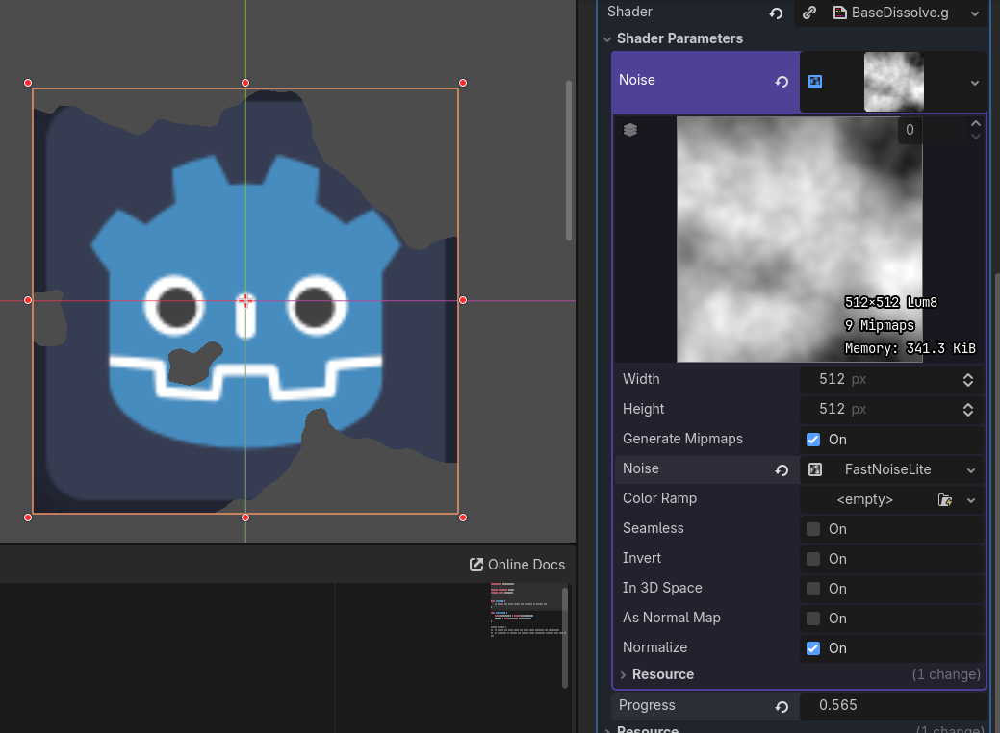

01UV坐标操控
08基础溶解
这里主要还是记录一下教程中的基础溶解效果，更多的溶解效果在效果实现文档中去逐步探索。
溶解效果实际上就是让整个图片的alpha值逐步变成0的过程。这种消融溶解可以坐在很多美术效果上。例如最简单的火焰燃烧消失溶解效果。
基础溶解效果只要用到噪音贴图(Noise Texture)即可，噪音贴图很多地方跟随机噪声一样。只是改成了直接生成在二维的贴图上面，有很多经典基础算法可以生成这样的噪音贴图。使用噪音贴图的溶解流程如下：
uniform sampler2D noise; // 噪音贴图 参数里面赋值
uniform float progress : hint_range(0.0,1.0); // 消融进度
void fragment() {
float noise_alpha = texture(noise,UV).r;
COLOR.a = step(progress, noise_alpha);
}设定progress之后效果如下：

其中noise变量需要在ShaderParameters设置一个NoiseTexture2D对象。里面可以生成一张噪音贴图。可以设置贴图大小，以及生成方式等等，如图。
实现局部溶解的方式也很简单，直接用一个float值取裁剪噪音贴图采样出的部分。其实可以把噪音贴图采样数值想象成一个连绵的山川，然后用一个水位线去逐步没过整个山丘。就像一个平面，数值在其下的部分alpha值直接设置为0。随着progress值的连续变化，整个溶解范围也会连续的扩大，由此产生一个溶解消失效果。
这样产生的效果也有的人称之为硬边溶解。因为分界线两边只有0和1的区别。表现出来就是有一个很明显的分水岭。要做一定过度方式也很简单改用smoothstep即可，其可以产生一段连续的过度范围如下：
uniform sampler2D noise; // 噪音贴图 参数里面赋值
uniform float progress : hint_range(0.0,1.0); // 消融进度
void fragment() {
float noise_alpha = texture(noise,UV).r;
COLOR.a = step(progress-0.3, progress, noise_alpha); // 0.3表示中间过渡区间的宽度
}根据smoothstep(a,b,c)函数特点。当$cprogress-0.3,progress范围内产生一个过渡效果。这个边上的溶解就会软和化，有人也称之为软边溶解。
不过这样溶解有一个问题，就是要完全溶解progress的溶解进度不再是$0\to 1$而是$0.3\to 1.3$。这个只要根据参数做一次重映射即可。
教程里面的公式与这里略不一样，其为
uniform sampler2D noise; // 噪音贴图 参数里面赋值
uniform float progress : hint_range(0.0,1.0); // 消融进度
uniform float gradient_progress;
void fragment() {
float noise_alpha = texture(noise,UV).r;
COLOR.a = step(progress, noise_alpha);
COLOR.a += smoothstep(noise_alpha, 0.0, gradient_progress);
}这个方式需要调控两个参数才能达到逐渐消融过程。首先progress参数决定了最终消失后的范围形状，而gradient_progress则决定了在已经消失的部分上如何过渡。smoothstep计算出的值只在前面透明度为0的区域上会添加一个alpha渐变过渡。
现在分析gradient_progress控制部分。如果其值为0，则透明区域上附加值为1，也就是说此时没有透明区域，完全可见。如果其值小于noise_alpha,就是噪音贴图的采样值，这个时候，附加值为0，也就是说此时相当于硬边溶解。由于透明区域的噪音贴图采样值也各不一样，所以gradient_progress控制了显示区间，从$0 \to 1$变化，则原有透明区域会呈现一个逐渐从有到无的过程。当在$(0,a_{noise})$是，会有个渐变插值过渡。
跟多实现效果可以见 Shader效果实现中的溶解部分。